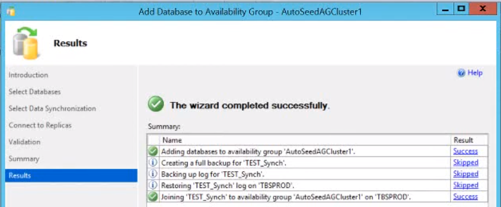

| Distributed Availability Group |
Overview
An advanced high-availability and disaster recovery feature that extends an Always On Availability Group across multiple, separate SQL Server instances. These instances can be located in different geographical locations or even different data centers. This setup ensures continuous data availability and redundancy, allowing for automatic failover and load balancing across distributed environments, enhancing both reliability and fault tolerance.
To create a distributed AG, you must create two AGs each with its own listener. You then combine these AGs into a distributed AG.
Keywords:
- Primary on the 1st cluster (Global) -> Primary on the 2nd cluster (Forwarder)
- No GUI for the setup.
- Does not support automatic failover.
Requirements
- SQL Server 2016 or higher.
- WSFC with nodes in different clusters.
- Synchronous mode.
Implementation
Overview
- Set the endpoint listeners to listen to all IP addresses on all nodes.
- Set up AG (global).
- Set up AG (forwarder).
- Create distributed AG.
Detailed
- Set the endpoint listeners to listen to all IP addresses on all nodes.
LISTENER_IP = ALLis not available in the GUI.- Grant SQL Server Service Account CONNECT permission to the Endpoint.
- Set up Primary AG (global primary) on the first SQL Server Instance (WSFC 1).
- Create the primary AG on the first cluster.
- Join the secondary replicas to the primary AG.
- Create a listener for the primary AG.
- Check current status of primary AG.
- Set up Secondary AG on the second SQL Server Instance (WSFC 1).
- Create second AG.
- Join the secondary replicas to the secondary AG.
- Create a listener for the secondary AG.
- Check current status of secondary AG.
- Create distributed AG.
- Join second cluster on distributed AG.
- Monitor Synchronization status.
CREATE ENDPOINT [HADR-Endpoint] STATE=STARTED AS TCP (LISTENER_PORT = 5022, LISTENER_IP = ALL) FOR DATA_MIRRORING ( ROLE = ALL, AUTHENTICATION = WINDOWS NEGOTIATE, ENCRYPTION = REQUIRED ALGORITHM AES ) GO -- ALTER ENDPOINT [HADR-Endpoint] AS TCP (LISTENER_IP = ALL) -- for existing endpoint /* If needs to grant connect permission to SQL Server Service Account on the Endpoint. CREATE LOGIN [eapb\edgar.bayron] FROM WINDOWS GRANT CONNECT ON ENDPOINT::[HADR-Endpoint] TO [eapb\edgar.bayron] */
-- run on primary cluster, primary node USE master CREATE AVAILABILITY GROUP [AutoSeedAGCluster1] FOR DATABASE NA_Sales REPLICA ON N'TBSCHAPROD' WITH ( ENDPOINT_URL N'TCP://TBSCHAPROD.Techbrothers.local:5022', FAILOVER MODE = AUTOMATIC, AVAILABILITY_MODE = SYNCHRONOUS_COMMIT, BACKUP_PRIORITY = 50, SECONDARY_ROLE(ALLOW_CONNECTIONS = NO), SEEDING_MODE = AUTOMATIC), N'TBSPROD' WITH ( ENDPOINT_URL N'TCP://TBSPROD.Techbrothers.local:5022', FAILOVER_MODE = AUTOMATIC, AVAILABILITY_MODE = SYNCHRONOUS_COMMIT, BACKUP_PRIORITY = 50, SECONDARY_ROLE(ALLOW_CONNECTIONS = NO), SEEDING_MODE = AUTOMATIC)
-- run on primary cluster, secondary node ALTER AVAILABILITY GROUP [AutoSeedAGCluster1] JOIN ALTER AVAILABILITY GROUP [AutoSeedAGCluster1] GRANT CREATE ANY DATABASE
-- run on primary cluster, primary node
ALTER AVAILABILITY GROUP [AutoSeedAGCluster1]
ADD LISTENER 'Clus1_Listner' (WITH IP
(('192.168.1.86'),('255.255.255.0')
)
, PORT=1433)
-- run on secondary cluster, primary node USE master CREATE AVAILABILITY GROUP [AutoSeedAGCluster2] FOR -- no database specified REPLICA ON N'SQLPROD1' WITH ( ENDPOINT_URL N'TCP://SQLPROD1.Techbrothers.local:5022', FAILOVER MODE = MANUAL, -- manual instead of automatic in primary cluster AVAILABILITY_MODE = SYNCHRONOUS_COMMIT, BACKUP_PRIORITY = 50, SECONDARY_ROLE(ALLOW_CONNECTIONS = NO), SEEDING_MODE = AUTOMATIC), N'SQLPROD2' WITH ( ENDPOINT_URL N'TCP://SQLPROD2.Techbrothers.local:5022', FAILOVER_MODE = MANUAL, AVAILABILITY_MODE = SYNCHRONOUS_COMMIT, BACKUP_PRIORITY = 50, SECONDARY_ROLE(ALLOW_CONNECTIONS = NO), SEEDING_MODE = AUTOMATIC)
-- run on secondary cluster, secondary node ALTER AVAILABILITY GROUP [AutoSeedAGCluster2] JOIN ALTER AVAILABILITY GROUP [AutoSeedAGCluster2] GRANT CREATE ANY DATABASE
-- run on secondary cluster, primary node
ALTER AVAILABILITY GROUP [AutoSeedAGCluster2]
ADD LISTENER 'Clus2_Listner' (WITH IP
(('192.168.1.88'),('255.255.255.0')
)
, PORT=1433)
-- run on primary cluster, primary AG CREATE AVAILABILITY GROUP [AG_Distributor] WITH (DISTRIBUTED) AVAILABILITY GROUP ON 'AutoSeedAGCluster1' WITH ( LISTENER_URL = 'tcp://clus1_Listner:5022', AVAILABILITY_MODE = ASYNCHRONOUS_COMMIT, FAILOVER_MODE = MANUAL, SEEDING_MODE = AUTOMATIC), 'AutoSeedAGCluster2' WITH ( LISTENER_URL = 'tcp://clus2_Listner:5022', AVAILABILITY_MODE = ASYNCHRONOUS_COMMIT, FAILOVER_MODE = MANUAL, SEEDING_MODE = AUTOMATIC)
-- run on secondary cluster, primary AG ALTER AVAILABILITY GROUP [AG_Distributor] JOIN AVAILABILITY GROUP ON 'AutoSeedAGCluster1' WITH ( LISTENER_URL = 'tcp://clus1_Listner:5022', AVAILABILITY_MODE = ASYNCHRONOUS_COMMIT, FAILOVER_MODE = MANUAL, SEEDING_MODE = AUTOMATIC), 'AutoSeedAGCluster2' WITH ( LISTENER_URL = 'tcp://clus2_Listner:5022', AVAILABILITY_MODE = ASYNCHRONOUS_COMMIT, FAILOVER_MODE = MANUAL, SEEDING_MODE = AUTOMATIC)
SELECT ag.name, drs.database_id, drs.group_id drs.replica_id, drs.synchronization_state_desc, drs.end_of_log_1sn FROM sys.dm_hadr_database_replica_states drs INNER JOIN sys.availability_groups ag ON drs.group_id = ag group_id;
Performing a Failover
- Set primary replica of secondary cluster's AVAILABILITY_MODE from ASYNCHRONOUS_COMMIT to SYNCHRONOUS_COMMIT and SEEDING_MODE from AUTOMATIC to MANUAL.
- Wait until all status becomes SYNCHRONIZING.
- Perform a failover.
- Set configurations of AVAILABILITY_MODE from SYNCHRONOUS_COMMIT to ASYNCHRONOUS_COMMIT and SEEDING_MODE from MANUAL to AUTOMATIC since we are replicating data accross data centers.
-- run on both primary AGs, global first ALTER AVAILABILITY GROUP [AG_Distributor] MODIFY AVAILABILITY GROUP ON 'AutoSeedAGCluster1' WITH ( LISTENER_URL = 'tcp://clus1_Listner:5022', AVAILABILITY_MODE = SYNCHRONOUS_COMMIT, FAILOVER_MODE = MANUAL, SEEDING_MODE = MANUAL), 'AutoSeedAGCluster2' WITH ( LISTENER_URL = 'tcp://clus2_Listner:5022', AVAILABILITY_MODE = SYNCHRONOUS_COMMIT, FAILOVER_MODE = MANUAL, SEEDING_MODE = MANUAL)
-- execute in SQLCMD mode. they should have same results. :connect TBSCHAPROD SELECT ag.name, drs.database_id, drs.group_id drs.replica_id, drs.synchronization_state_desc, drs.end_of_log_1sn FROM sys.dm_hadr_database_replica_states drs INNER JOIN sys.availability_groups ag ON drs.group_id = ag group_id; :connect SQLPROD1 SELECT ag.name, drs.database_id, drs.group_id drs.replica_id, drs.synchronization_state_desc, drs.end_of_log_1sn FROM sys.dm_hadr_database_replica_states drs INNER JOIN sys.availability_groups ag ON drs.group_id = ag group_id;
-- run on primary cluster, primary AG ALTER AVAILABILITY GROUP [AG_Distributor] SET (ROLE = SECONDARY) -- if communication gets lost (primary replica in primary AG and secondary replica in secondary AG is offline), run this too in the secondary cluster, primary AG -- or run: ALTER AVAILABILITY GROUP [AG_Distributor] FORCE_FAILOVER_ALLOW_DATA_LOSS
-- run on both primary AGs, global first ALTER AVAILABILITY GROUP [AG_Distributor] MODIFY AVAILABILITY GROUP ON 'AutoSeedAGCluster1' WITH ( --LISTENER_URL = 'tcp://clus1_Listner:5022', --FAILOVER_MODE = MANUAL, --SEEDING_MODE = AUTOMATIC AVAILABILITY_MODE = ASYNCHRONOUS_COMMIT), 'AutoSeedAGCluster2' WITH ( --LISTENER_URL = 'tcp://clus2_Listner:5022', --FAILOVER_MODE = MANUAL, --SEEDING_MODE = AUTOMATIC, AVAILABILITY_MODE = ASYNCHRONOUS_COMMIT)
Best Practices and References
- When adding a database, choose "Join Only" as it will automatically create the databases on the other nodes.
- References:
- https://www.youtube.com/watch?v=Xuc6n8wrnXc
- https://www.mssqltips.com/sqlservertip/6435/manual-failover-of-sql-server-always-on-distributed-availability-group-for-disaster-recovery-testing/
- https://www.youtube.com/watch?v=Q5JViPSL1CI
- https://www.youtube.com/watch?v=mTSdxHnLLlg&list=PL_VhzVcQP_6CeG7oxztjkLM0SiEQZ8jUb&index=42
- https://learn.microsoft.com/en-us/sql/database-engine/availability-groups/windows/configure-distributed-availability-groups?view=sql-server-ver16&tabs=automatic
- https://www.linkedin.com/pulse/implementing-distributed-availability-groups-guide-tiago-sumita-kvpuf/
